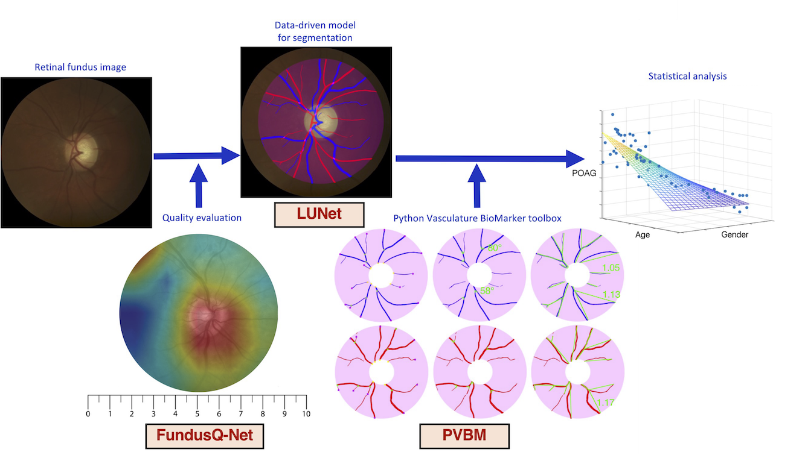

PVBM: A Python Vasculature Biomarker Toolbox Based on Retinal Blood Vessel Segmentation
Jonathan Fhima • Jan Van Eijgen • Ingeborg Stalmans • Yevgeniy Men • Moti Freiman • Joachim A. Behar
Installation
Available on pip. Run:
pip install pvbm
Vasculature Biomarkers
Digital fundus images are specialized photographs of the interior surface of the eye, capturing detailed views of the retina, including blood vessels, the optic disc, and the macula. They are invaluable tools in ophthalmology and optometry for diagnosing and monitoring various ocular diseases, including diabetic retinopathy, glaucoma, and macular degeneration.
The fundus image allows for the visualization of numerous vascular features, notably the arterioles (small arteries) and venules (small veins). Advanced image processing and machine learning techniques now enable the extraction of arterioles and venules from fundus images, a process known as A/V segmentation. By isolating these vessels, we can examine their morphology and distribution in greater detail, revealing subtle changes that might otherwise go unnoticed.
From this A/V segmentation, we can compute vasculature biomarkers, which are quantifiable indicators of biological states or conditions. By analyzing these vasculature biomarkers, healthcare professionals can gain deeper insights into a patient’s ocular health and potentially detect early signs of disease. This approach represents a promising frontier in eye care, allowing for more proactive and personalized treatment strategies.
Fifteen biomarkers have been engineered independently on the arterioles and venules segmentation, namely:
Area: Area of the blood vessels computed by summing the number of pixels within the segmented arteriole or venule regions. Expressed in square pixels.
Length: Cumulative length of the segmented blood vessels, calculated as the distance required to traverse the entire skeleton. Expressed in pixels.
Tortuosity Index: Tortuosity measure based on the overall arc-chord ratio.
Median Tortuosity: Median value of the per-vessel tortuosity, computed using the arc-chord ratio.
Number of Startpoints: Number of skeleton points situated on the optic disc, representing vessel start points.
Number of Endpoints: Number of skeleton points terminating the blood vessels.
Number of Intersection Points: Number of skeleton points where vessels branch into two smaller vessels.
Median Branching Angle: Median value of the branching angle distribution evaluated for all blood vessels. Expressed in degrees (°).
Capacity Dimension: Also known as the box-counting dimension, measuring the space-filling capacity of the pattern.
Entropy Dimension: Also known as the entropy dimension, measuring the distribution of the pattern.
Correlation Dimension: Also known as the correlation dimension, measuring the correlation of the pattern.
Singularity Length: Range of fluctuation in the fractal dimension, providing insights into the complexity of local variations within the image.
Central Retinal Arteriolar Equivalent (Knudtson and Hubbard): Central Retinal Arterial Equivalent (CRAE) computed using the Knudtson or Hubbard formula, estimating the caliber of the central retinal arteriole.
Central Retinal Venular Equivalent (Knudtson and Hubbard): Central Retinal Venous Equivalent (CRVE) computed using the Knudtson or Hubbard formula, estimating the caliber of the central retinal vein.
Arterio-Venous Ratio (Knudtson and Hubbard): The AVR is calculated using the ratios of CRAE and CRVE. This ratio assesses the relationship between retinal arterioles and venules, providing insights into vascular health and potential cardiovascular risk factors. (It is not included in the tutorial but can be easily inferred by dividing the CRAE by the CRVE.)
Look at the tutorial for a code example.
Artery/Veins Blood Vessel Segmentation Datasets
You can access the external test set used in the LUNet paper directly from PVBM: (These include Crop_HRF, INSPIRE, and UNAF.)
from PVBM.Datasets import PVBMDataDownloader
path_to_save_datasets = "../PVBM_datasets"
dataset_downloader = PVBMDataDownloader()
dataset_downloader.download_dataset(name="Crop_HRF", save_folder_path=path_to_save_datasets)
dataset_downloader.download_dataset(name="INSPIRE", save_folder_path=path_to_save_datasets)
dataset_downloader.download_dataset(name="UNAF", save_folder_path=path_to_save_datasets)
print("Images downloaded successfully")
Optic Disc Segmentation
We have included an optic disc segmenter to perform more accurate VBM estimation. This has been done using LUNet.
from PVBM.DiscSegmenter import DiscSegmenter
# Initialize the segmenter
segmenter = DiscSegmenter()
# Define the segmentation path and replace specific parts of the path
image_path = '../PVBM_datasets/INSPIRE/images/image13.png'
# Extract the segmentation
optic_disc = segmenter.segment(image_path=image_path)
#Extract the optic disc features
center, radius, roi, zones_ABC = segmenter.post_processing(segmentation=optic_disc, max_roi_size = 600)
Geometrical VBMs
### First run the optic disc segmentation snippet to extract center, radius, roi, zones_ABC
from PVBM.GeometryAnalysis import GeometricalVBMs #Import the geometry analysis module
import numpy as np
from skimage.morphology import skeletonize
from PIL import Image
#Preprocessing and roi extraction
blood_vessel_segmentation_path = '../PVBM_datasets/INSPIRE/artery/image13.png'
segmentation = np.array(Image.open(blood_vessel_segmentation_path))/255 #Open the segmentation
skeleton = skeletonize(segmentation)*1
geometricalVBMs = GeometricalVBMs() #Instanciate a geometrical VBM object
segmentation_roi, skeleton_roi = geometricalVBMs.apply_roi(
segmentation=segmentation,
skeleton=skeleton,
zones_ABC=zones_ABC,
roi=roi
)
vbms, visual = geometricalVBMs.compute_geomVBMs(
blood_vessel=segmentation_roi,
skeleton=skeleton_roi,
xc=center[0],
yc=center[1],
radius=radius
)
area, TI, medTor, ovlen, medianba, startp, endp, interp = vbms
Fractal Analysis
### First run the optic disc segmentation snippet to extract center, radius, roi, zones_ABC
### Then compute the segmentation_roi array as done in the previous code snippet
from PVBM.FractalAnalysis import MultifractalVBMs
import numpy as np
from PIL import Image
fractalVBMs = MultifractalVBMs(n_rotations = 25,optimize = True, min_proba = 0.0001, maxproba = 0.9999)
D0,D1,D2,SL = fractalVBMs.compute_multifractals(segmentation_roi.copy())
Central Retinal Equivalent Analysis
### First run the optic disc segmentation snippet to extract center, radius, roi, zones_ABC
from PVBM.CentralRetinalAnalysis import CREVBMs
import numpy as np
from skimage.morphology import skeletonize
from PIL import Image
#Preprocessing and roi extraction
creVBMs = CREVBMs()
####Artery
blood_vessel_segmentation_path = '../PVBM_datasets/INSPIRE/artery/image13.png'
segmentation = np.array(Image.open(blood_vessel_segmentation_path))/255 #Open the segmentation
skeleton = skeletonize(segmentation)*1
segmentation_roi, skeleton_roi = creVBMs.apply_roi(
segmentation=segmentation,
skeleton=skeleton,
zones_ABC=zones_ABC
)
out = creVBMs.compute_central_retinal_equivalents(
blood_vessel=segmentation_roi.copy(),
skeleton=skeleton_roi.copy(),
xc=center[0],
yc=center[1],
radius=radius,
artery = True,
Toplot = False #This allows to generate the CRE visualisation but require a lot of RAM
# If you are only interested about the VBMs values then set Toplot to False
)
craek, craeh = out["craek"], out["craeh"]
####Veins
blood_vessel_segmentation_path = '../PVBM_datasets/INSPIRE/veins/image13.png'
segmentation = np.array(Image.open(blood_vessel_segmentation_path))/255 #Open the segmentation
skeleton = skeletonize(segmentation)*1
segmentation_roi, skeleton_roi = creVBMs.apply_roi(
segmentation=segmentation,
skeleton=skeleton,
zones_ABC=zones_ABC
)
out = creVBMs.compute_central_retinal_equivalents(
blood_vessel=segmentation_roi.copy(),
skeleton=skeleton_roi.copy(),
xc=center[0],
yc=center[1],
radius=radius,
artery = False,
Toplot = False #This allows to generate the CRE visualisation but require a lot of RAM
# If you are only interested about the VBMs values then set Toplot to False
)
crvek, crveh = out["crvek"], out["crveh"]
AVR_h = craeh/crveh
AVR_k = craek/crvek
print(f"CRAE_H: {craeh}, CRAE_K: {craek},CRVE_H: {crveh}, CRVE_K: {crvek}, AVR_H: {AVR_h}, AVR_K: {AVR_k} ")
Citation
If you find this code or data to be useful for your research, please consider citing the following papers.
@inproceedings{fhima2022pvbm,
title={PVBM: a Python vasculature biomarker toolbox based on retinal blood vessel segmentation},
author={Fhima, Jonathan and Eijgen, Jan Van and Stalmans, Ingeborg and Men, Yevgeniy and Freiman, Moti and Behar, Joachim A},
booktitle={European Conference on Computer Vision},
pages={296--312},
year={2022},
organization={Springer}
}
@article{fhima2024lunet,
title={LUNet: deep learning for the segmentation of arterioles and venules in high resolution fundus images},
author={Fhima, Jonathan and Van Eijgen, Jan and Moulin-Roms{\'e}e, Marie-Isaline Billen and Brackenier, Helo{\"\i}se and Kulenovic, Hana and Debeuf, Val{\'e}rie and Vangilbergen, Marie and Freiman, Moti and Stalmans, Ingeborg and Behar, Joachim A},
journal={Physiological Measurement},
volume={45},
number={5},
pages={055002},
year={2024},
publisher={IOP Publishing}
}
@article{fhima2024computerized,
title={Computerized analysis of the eye vasculature in a mass dataset of digital fundus images: the example of age, sex and primary open-angle glaucoma},
author={Fhima, Jonathan and Eijgen, Jan Van and Reiner-Benaim, Anat and Beeckmans, Lennert and Abramovich, Or and Stalmans, Ingeborg and Behar, Joachim A},
journal={medRxiv},
pages={2024--07},
year={2024},
publisher={Cold Spring Harbor Laboratory Press}
}